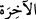
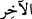
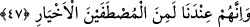
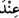
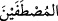
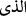
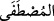
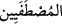
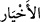
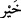

donanmış olarak kendimize özgü kıldık. Başka hiçbir maksada mâtuf olmayan bu
katışıksız haslet, yâni ebedî yurt ve asli ikametgâh olan ‘âhireti düşünme özelliği’
sâyesinde artık bizden başkasına -ne kendilerine ne de kendilerinden başkalarına- ârızî
bir aşkla da olsa meyletmezler. Yâni biz onları dünyaya ve onun karanlıklarına hiçbir
şekilde iltifat etmeksizin pislik (rics) mâdeninden yüzçevirip kutsallık (kuds) âleminin
nurlarıyla şerefyâb olma arzusuyla bu âlemi düşünmeleri sâyesinde kendi zâtımıza özgü
kıldık.
Fakir (Bursevî) der ki: Dünyanın Allah Teâlâ’nın celâl sıfatlarının tezahür yeri
(mazharı) olması hasebiyle “karanlık”; âhiretin ise Allah Teâlâ’nın cemâl sıfatlarının
tecellîgâhı olması hasebiyle “nûr” olduğunu kasdediyor. (__WORD__) kelimesindeki (__WORD__) harfi,
birşeyi bir şeye özgü kılmak (tahsis) içindir. Kelimenin aslı, Allah’tan ibâret olan (__WORD__ )’dir. Bu sebepledir ki kullar âhirette O’na dönerler.
47. Doğrusu onlar bizim katımızda seçkin iyi kimselerdendir.
“Doğrusu onlar bizim katımızda” emsalleri arasından tercih edilip seçilmiş
“seçkin” hayır hususunda emsallerine tercih edilmiş “iyi kimselerdendir.”
(__WORD__) “katında” lâfzı, (__WORD__)’nin delâlet ettiği mahzuf bir kelimenin zarfıdır. Bu
kelimenin mâmûlünün olması ise mümkün değildir. Çünkü bu kelimedeki elif-lâm, (__WORD__)
“ki o” anlamındadır, yâni sıladır; sılanın etki alanında bulunan bir kelime de mevsûlden
önce gelemez. (__WORD__) ve (__WORD__)’u fethalı olan bu lâfzı, (__WORD__)’nın çoğuludur. Kelime esasen
iki yâ’lı olup birinci yâ kesrelidir (__WORD__). Mânâsı: Emsalleri arasından tercih edilip
seçilmiş; (__WORD__) da hayır hususunda emsallerine tercih edilmiş kimseler demektir.
et-Te’vîlâtü’n-Necmiyye’de der ki: Bunlar, vâhidiyyet hazretinde bize yakın olmaları
için kendi nevîleri arasından seçip tercih ettiğimiz kişilerdendir. Bunlar ayrıca şer,
yokluk, imkân ve hudûs (varlığı mümkün ve sonradan olma) şâibelerinden münezzeh
bulunan hayırlı kişilerdendir.
Allah Teâlâ âyette önce Allah katında oluşu (indiyyet) zikredip seçilmişliği
(ıstıfâiyyet) onun peşinden zikretti. Böyle yapmasının sebebi, ubûdiyyetle ilgili olan
ıstıfâiyyet’in “oluş”un (kevn) ortaya çıkmasından evvel ezelî bulunduğuna işâret
etmektir. Böyle olunca bu zatlar herhangi bir illet ve sebebe bağlı olmaksızın hâlis bir
hibeye ve özel bir şerefe sâhip olmaktadır.
(__WORD__), -şer-eşrâr kelimelerinde olduğu gibi,- ism-i tafdîl olan (__WORD__)’ın; ya da
-“emvât” kelimesinin, “meyyit” ve “meyt” lafızlarının çoğulu olduğu gibi,- “hayyir”
veya “hayr” kelimelerinin cem’idir.